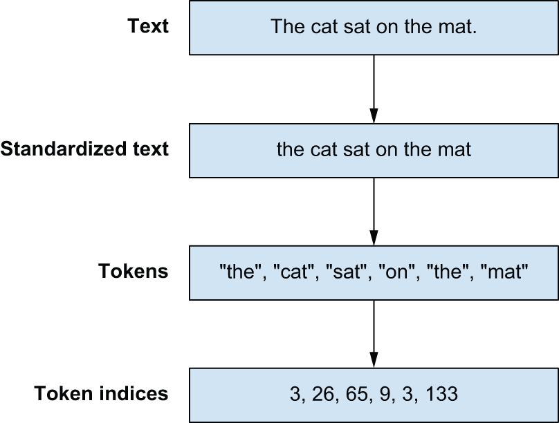
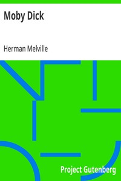
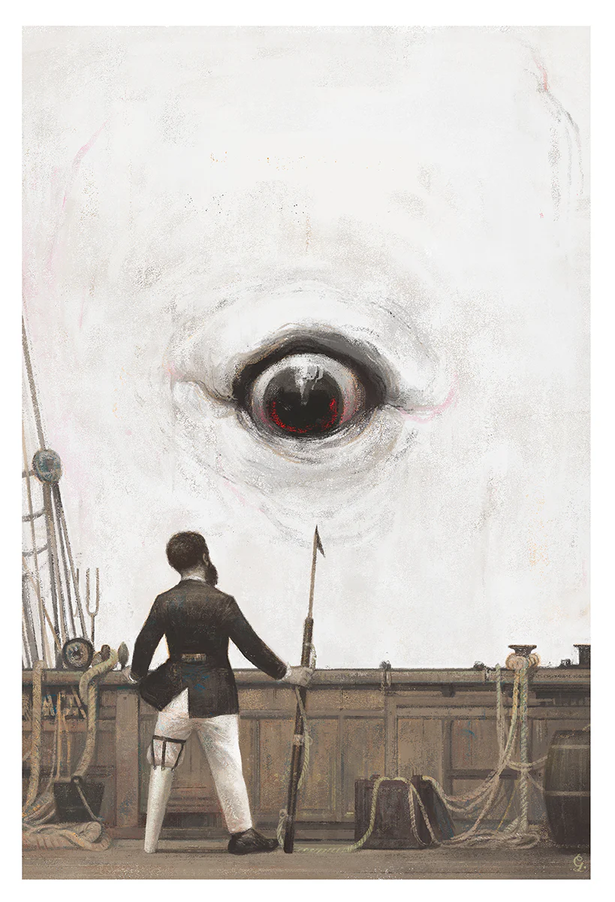
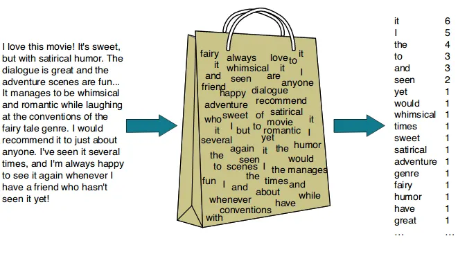
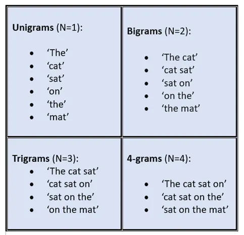

import regex as re
def split_chars(text):
return re.findall(r".", text)
chars = split_chars("The quick brown fox jumped over the lazy dog.")
chars[:12]
# ["T", "h", "e", " ", "q", "u", "i", "c", "k", " ", "b", "r"] Overview
This is a glance at the materials in Chapter 14—Text Classification—of Deep Learning with Python by Francois Chollet and Matthew Watson
Previously:
- Chapter 3: PyTorch
- Chapter 8: Image Classification
- Chapter 13: Time Series Forecasting
History
NoteNatural Languages
With human language, it’s the reverse: usage comes first, and rules arise later. Natural language was shaped by an evolutionary process, much like biological organisms — that’s what makes it “natural.” Its “rules,” like the grammar of English, were formalized after the fact
Rules-Based NLP
- 1950s: grammar rules
- 1990s: decision trees
Statistics-Based NLP
- 1990s: logistic regression
- 2010s: LSTMs
NoteApplications
- text classification
- translation
- language modeling
Preparing Text Data
Regular Expressions
Character Split
Word Split
def split_words(text):
return re.findall(r"[\w]+|[.,!?;]", text)
split_words("The quick brown fox jumped over the dog.")
# ["The", "quick", "brown", "fox", "jumped", "over", "the", "dog", "."] Vocabulary
NoteVocabulary
vocabulary = {
"[UNK]": 0,
"the": 1,
"quick": 2,
"brown": 3,
"fox": 4,
"jumped": 5,
"over": 6,
"dog": 7,
".": 8,
}words = split_words("The quick brown fox jumped over the lazy dog.")
indices = [vocabulary.get(word, 0) for word in words]
# [0, 2, 3, 4, 5, 6, 1, 0, 7, 8]
TipThree Stages for Preprocessing Text
- Standardization
- Splitting
- Indexing

Case Study: Moby Dick


filename = keras.utils.get_file(
origin="https://www.gutenberg.org/cache/epub/2701/pg2701.txt", #updated link
)
moby_dick = list(open(filename, "r"))Tokenizers
Character Tokenization
NoteCharTokenizer
class CharTokenizer:
def __init__(self, vocabulary):
self.vocabulary = vocabulary
self.unk_id = vocabulary["[UNK]"]
def standardize(self, inputs):
return inputs.lower()
def split(self, inputs):
return re.findall(r".", inputs)
def index(self, tokens):
return [self.vocabulary.get(t, self.unk_id) for t in tokens]
def __call__(self, inputs):
inputs = self.standardize(inputs)
tokens = self.split(inputs)
indices = self.index(tokens)
return indices
def compute_char_vocabulary(inputs, max_size):
char_counts = collections.Counter()
for x in inputs:
x = x.lower()
tokens = re.findall(r".", x)
char_counts.update(tokens)
vocabulary = ["[UNK]"]
most_common = char_counts.most_common(max_size - len(vocabulary))
for token, count in most_common:
vocabulary.append(token)
return dict((token, i) for i, token in enumerate(vocabulary))vocabulary = compute_char_vocabulary(moby_dick, max_size=100)
char_tokenizer = CharTokenizer(vocabulary)
print("Line length:", len(char_tokenizer("Call me Ishmael. Some years ago--never mind how long precisely.")))Vocabulary length: 80
Vocabulary start: ['[UNK]', ' ', 'e', 't', 'a', 'o', 'n', 'i', 's', 'h']
Vocabulary end: ['ו', '\u200e', 'ϰ', 'η', 'τ', 'ο', 'ς', 'â', '%', '+']
Line length: 63Word Tokenization
NoteWordTokenizer
class WordTokenizer:
def __init__(self, vocabulary):
self.vocabulary = vocabulary
self.unk_id = vocabulary["[UNK]"]
def standardize(self, inputs):
return inputs.lower()
def split(self, inputs):
return re.findall(r"[\w]+|[.,!?;]", inputs)
def index(self, tokens):
return [self.vocabulary.get(t, self.unk_id) for t in tokens]
def __call__(self, inputs):
inputs = self.standardize(inputs)
tokens = self.split(inputs)
indices = self.index(tokens)
return indices
def compute_word_vocabulary(inputs, max_size):
word_counts = collections.Counter()
for x in inputs:
x = x.lower()
tokens = re.findall(r"[\w]+|[.,!?;]", x)
word_counts.update(tokens)
vocabulary = ["[UNK]"]
most_common = word_counts.most_common(max_size - len(vocabulary))
for token, count in most_common:
vocabulary.append(token)
return dict((token, i) for i, token in enumerate(vocabulary))vocabulary = compute_word_vocabulary(moby_dick, max_size=2_000)
word_tokenizer = WordTokenizer(vocabulary)
print("Line length:", len(word_tokenizer("Call me Ishmael. Some years ago--never mind how long precisely.")))Vocabulary length: 2000
Vocabulary start: ['[UNK]', ',', 'the', '.', 'of']
Vocabulary end: ['fashion', 'lovely', 'steadily', 'fastened', 'birds']
Line length: 13
WarningWhich Route do we Choose?
Characters
- smaller vocabulary
- limited semantics
Words
- scalable vocabulary
- exponential growth
TipGoldilocks Principle!
- Subword Tokenization
- Byte-Pair Encoding (BPE)
Byte-Pair Encoding
NoteBPE
def count_pairs(counts):
pairs = collections.Counter()
for word, freq in counts.items():
symbols = word.split()
for pair in zip(symbols[:-1], symbols[1:]):
pairs[pair] += freq
return pairs
def merge_pair(counts, first, second):
# Matches an unmerged pair
split = re.compile(f"(?<!\S){first} {second}(?!\S)")
# Replaces all occurances with a merged version
merged = f"{first}{second}"
return {split.sub(merged, word): count for word, count in counts.items()}
for i in range(10):
pairs = count_pairs(counts)
first, second = max(pairs, key=pairs.get)
counts = merge_pair(counts, first, second)
print(list(counts.keys()))['t h e', 'q u i c k', 'b r ow n', 'f o x', 's l ow', 'f o x h o u n d']
['th e', 'q u i c k', 'b r ow n', 'f o x', 's l ow', 'f o x h o u n d']
['the', 'q u i c k', 'b r ow n', 'f o x', 's l ow', 'f o x h o u n d']
['the', 'q u i c k', 'br ow n', 'f o x', 's l ow', 'f o x h o u n d']
['the', 'q u i c k', 'brow n', 'f o x', 's l ow', 'f o x h o u n d']
['the', 'q u i c k', 'brown', 'f o x', 's l ow', 'f o x h o u n d']
['the', 'q u i c k', 'brown', 'fo x', 's l ow', 'fo x h o u n d']
['the', 'q u i c k', 'brown', 'fox', 's l ow', 'fox h o u n d']
['the', 'qu i c k', 'brown', 'fox', 's l ow', 'fox h o u n d']
['the', 'qui c k', 'brown', 'fox', 's l ow', 'fox h o u n d']Subword Tokenization
NoteSubword Tokenizer
def compute_sub_word_vocabulary(dataset, vocab_size):
counts = count_and_split_words(dataset)
char_counts = collections.Counter()
for word in counts:
for char in word.split():
char_counts[char] += counts[word]
most_common = char_counts.most_common()
vocab = ["[UNK]"] + [char for char, freq in most_common]
merges = []
while len(vocab) < vocab_size:
pairs = count_pairs(counts)
if not pairs:
break
first, second = max(pairs, key=pairs.get)
counts = merge_pair(counts, first, second)
vocab.append(f"{first}{second}")
merges.append(f"{first} {second}")
vocab = dict((token, index) for index, token in enumerate(vocab))
merges = dict((token, rank) for rank, token in enumerate(merges))
return vocab, merges
class SubWordTokenizer:
def __init__(self, vocabulary, merges):
self.vocabulary = vocabulary
self.merges = merges
self.unk_id = vocabulary["[UNK]"]
def standardize(self, inputs):
return inputs.lower()
def bpe_merge(self, word):
while True:
# Matches all symbol pairs in the text
pairs = re.findall(r"(?<!\S)\S+ \S+(?!\S)", word, overlapped=True)
if not pairs:
break
# We apply merge rules in "rank" order. More frequent pairs
# are merged first.
best = min(pairs, key=lambda pair: self.merges.get(pair, 1e9))
if best not in self.merges:
break
first, second = best.split()
split = re.compile(f"(?<!\S){first} {second}(?!\S)")
merged = f"{first}{second}"
word = split.sub(merged, word)
return word
def split(self, inputs):
tokens = []
# Split words
for word in re.findall(r"[\w]+|[.,!?;]", inputs):
# Joins all characters with a space
word = " ".join(re.findall(r".", word))
# Applies byte-pair encoding merge rules
word = self.bpe_merge(word)
tokens.extend(word.split())
return tokens
def index(self, tokens):
return [self.vocabulary.get(t, self.unk_id) for t in tokens]
def __call__(self, inputs):
inputs = self.standardize(inputs)
tokens = self.split(inputs)
indices = self.index(tokens)
return indicesVocabulary length: 2000
Vocabulary start: ['[UNK]', 'e', 't', 'a', 'o', 'n', 'i', 's', 'h', 'r']
Vocabulary end: ['mariners', 'height', 'certainly', 'sor', 'sist', 'similar', 'aught']
Line length: 16
Time elapsed: 89.45 seconds
Sets
Case Study: IMDb Reviews

Classification
- positive?
- negative?
print(textwrap.fill(
open(imdb_extract_dir / "train" / "pos" / "4078_10.txt", "r").read(),
width = 60))This is one of my all time favorite movies, PERIOD. I can’t think of another movie that combines so many nice movie qualities like this one does. This flick has it all: Action, Adventure, Science Fiction, Good vs. Bad and even some Romance (without even an innocent “peck” on the cheek between the Pazu and Sheeta). Maybe best of all, you don’t have to be in Mensa to “get it” and enjoy the movie like you do with some of Miyazaki’s other movies (I don’t know about you, but I watch movies to take a break from thinking). This is just a flat-out enjoyable movie that everyone will like, so do yourself a favor and go buy it. The only sour note is the American Dubbing. I found Vander-Geek to be just plain annoying. But all is not lost, the original Japanese version is on the two-disc set and it rocks! Who cares if you can’t understand spoken Japanese? If you can read at a second- grade level then watch the original Japanese recording with English subtitles. You won’t regret it.
Bag of Words (BOW)

- image source: Rahul Sharma
- batch size: 32
- vocabulary size: 20000 words
Warninglimitation
Bag-of-words models ignore word order
Bigrams

- image source: Omar Hankare
- batch size: 32
- vocabulary size: 30000 bigrams
Warninglimitation
n-gram models grow rapidly
Sequences
Padding
TipPadding
Ensure that sequences have the same length to speed up training
print(x.shape)
print(x)(32, 600)
[[ 11 139 26 ... 0 0 0]
[ 7 9 372 ... 0 0 0]
[14107 16 419 ... 0 0 0]
...
[ 10 152 920 ... 0 0 0]
[ 2 64 5 ... 0 0 0]
[ 2 116 14 ... 0 0 0]]Sequence Models
NoteDevice
Text preprocessing is unique because it must always run on a CPU. GPUs strictly handle numeric inputs, so all tokenization must happen before your GPU’s train step.
TipBottleneck
The name of the game when preprocessing text input on the fly is to be “fast enough.” You want to ensure your expensive GPUs always have a new batch of preprocessed data to ingest. If you do that, the GPU is the bottleneck, and there is nothing to gain by improving your tokenization speed.
Wrap Up
| Text Classification | |||
| IMDb Reviews Dataset | |||
| model_name | param_count | time_sec1 | test_acc |
|---|---|---|---|
| bag of words | 20k | 2.0 | 0.8890 |
| bigram | 30k | 2.1 | 0.9021 |
| LSTM with one-hot | 15.4M | NA | 0.8481 |
| LSTM with embedding | 2.0M | 33.0 | 0.8122 |
| CBOW, pre-trained embedding | 3.9M | 32.0 | 0.8247 |
| Source: Deep Learning with Python | |||
| 1 training time, in seconds, per epoch | |||
NoteSession Info
sessionInfo()R version 4.6.0 (2026-04-24 ucrt)
Platform: x86_64-w64-mingw32/x64
Running under: Windows 10 x64 (build 19045)
Matrix products: default
LAPACK version 3.12.1
locale:
[1] LC_COLLATE=English_United States.utf8
[2] LC_CTYPE=English_United States.utf8
[3] LC_MONETARY=English_United States.utf8
[4] LC_NUMERIC=C
[5] LC_TIME=English_United States.utf8
time zone: America/New_York
tzcode source: internal
attached base packages:
[1] stats graphics grDevices utils datasets methods base
other attached packages:
[1] gt_1.3.0
loaded via a namespace (and not attached):
[1] vctrs_0.7.3 cli_3.6.6 knitr_1.51 rlang_1.2.0
[5] xfun_0.57 png_0.1-9 generics_0.1.4 jsonlite_2.0.0
[9] glue_1.8.1 htmltools_0.5.9 sass_0.4.10 rmarkdown_2.31
[13] grid_4.6.0 evaluate_1.0.5 tibble_3.3.1 fastmap_1.2.0
[17] yaml_2.3.12 lifecycle_1.0.5 compiler_4.6.0 dplyr_1.2.1
[21] fs_2.1.0 Rcpp_1.1.1-1.1 htmlwidgets_1.6.4 pkgconfig_2.0.3
[25] rstudioapi_0.18.0 lattice_0.22-9 digest_0.6.39 R6_2.6.1
[29] reticulate_1.46.0 tidyselect_1.2.1 pillar_1.11.1 magrittr_2.0.5
[33] Matrix_1.7-5 withr_3.0.2 tools_4.6.0 xml2_1.5.2